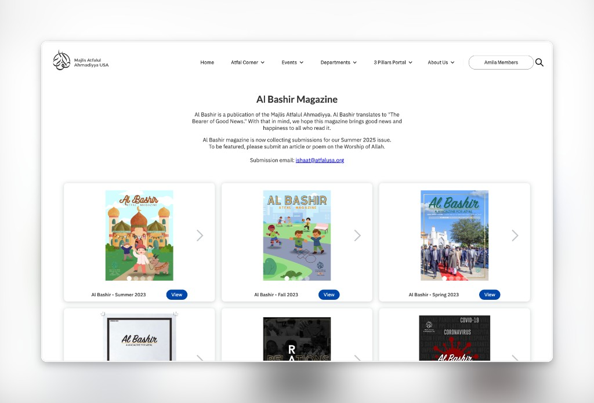
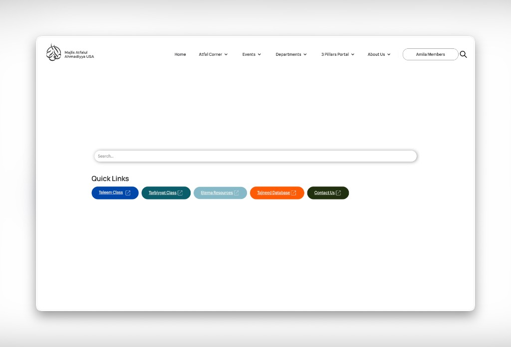
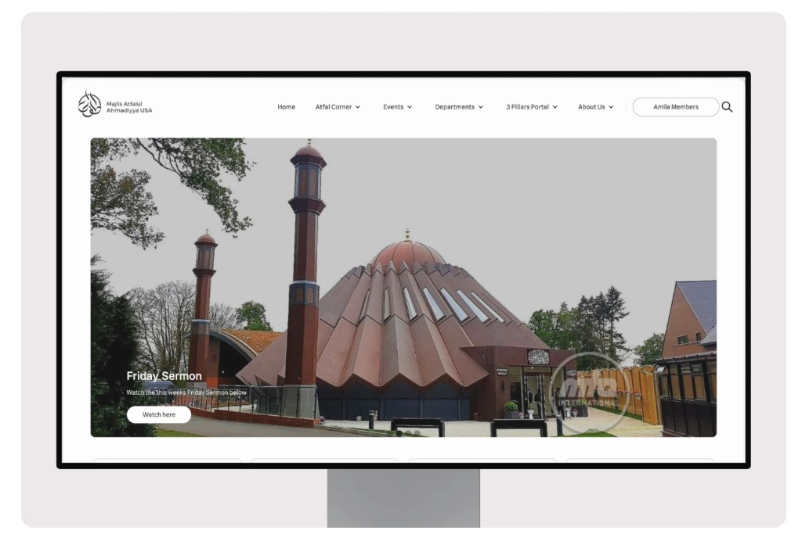
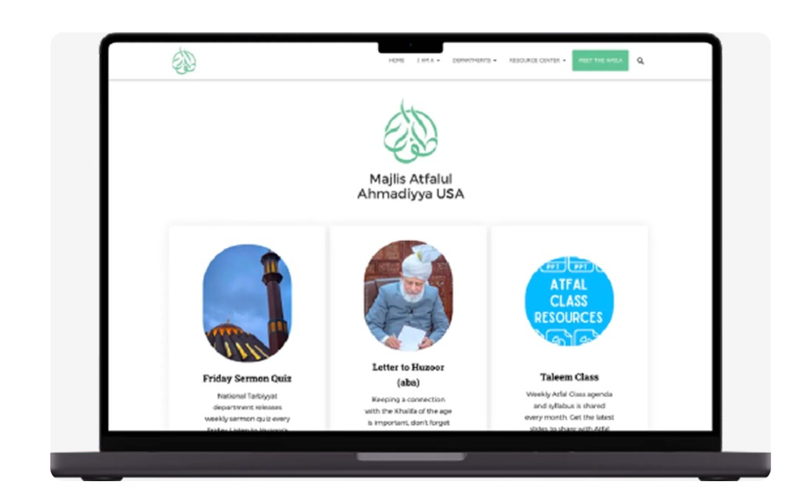

National Muslim Youth Association
Redesigning a non-profit site to better serve Muslim youth.
Overview
The National Muslim Youth Association is a non-profit whose site hosts religious teachings, event materials, and program resources for youth members nationally. I was brought on to maintain the site, but after finding cluttered navigation, outdated content, and active malware, I proposed and led a full redesign instead.
Outcome
The redesigned site launched June 2024 on Webflow, migrating off a WordPress install plagued by malware, broken plugins, and scattered account access — resolving the vulnerability cycle that had repeatedly taken the site offline. Within months, traffic rose 30%, returning visitors grew 10-15%, and page views rose 15% (vs. the WordPress baseline via Webflow analytics), driven mainly by a navigation redesign that cut critical-page access from 5-6 clicks to 2-3. My time with NMYA concluded in November 2025.


Problem
Years of content updates without structural cleanup left the site hard to navigate. Parents couldn't find teaching materials. Youth skipped the site entirely. The WordPress build had malware issues that made maintenance risky. The site needed to be rebuilt from the ground up — new platform, new IA, new design system.
User Research
Alongside development, I ran small focus groups on an early prototype to understand how users navigated and interacted with the new site, and to compare their behavior against the old one.
Research groups revealed three recurring friction points: people needed clearer paths to updates, easier access to materials, and a mobile experience that felt more engaging.
Parents
Parents found it difficult to stay up to date with events happening at their local mosque.
Many parents had limited technology experience, making page navigation feel unclear.
Important resources were difficult to find and access from the old website structure.
Teachers
Teachers needed a faster way to locate presentations and class resources.
Inputting class data into national spreadsheets was difficult alongside lesson prep.
Teachers also ran into the same navigation issues parents experienced.
Youth
Youth visitors did not find the old website exciting enough to return often.
Many accessed the website on mobile, where key materials were harder to reach.


Wireframe & Development
I built wireframes addressing the major pain points users faced, and once the board approved them, developed the site on Webflow — incorporating the organization's logo colors and assets, introducing additional interface colors, and prioritizing accessibility across screen sizes, especially mobile and tablet.